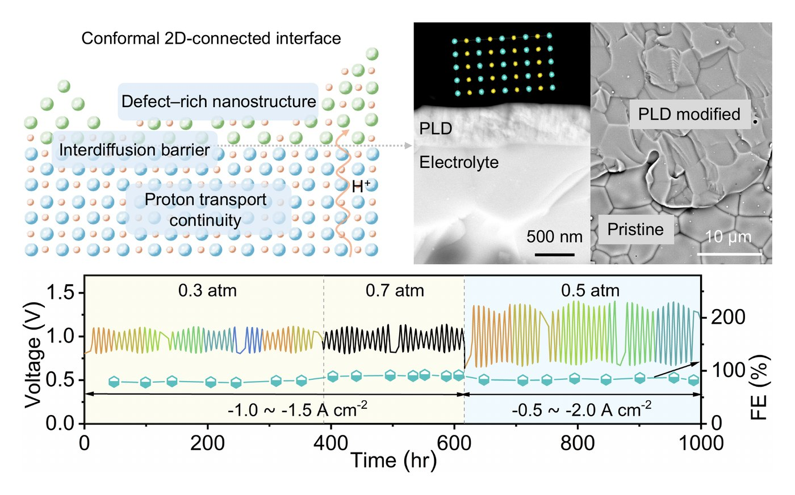
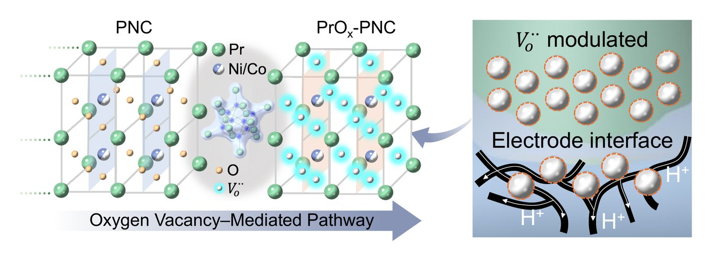
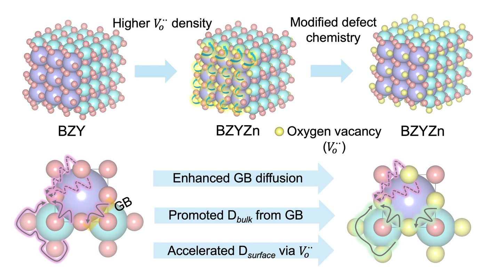
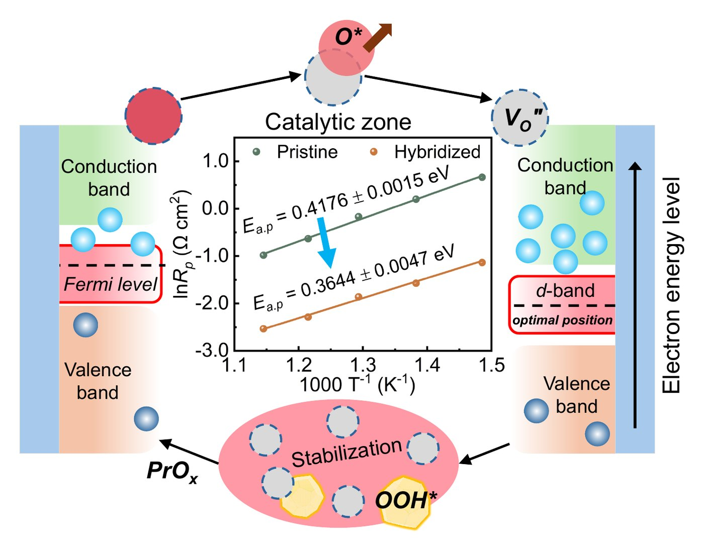
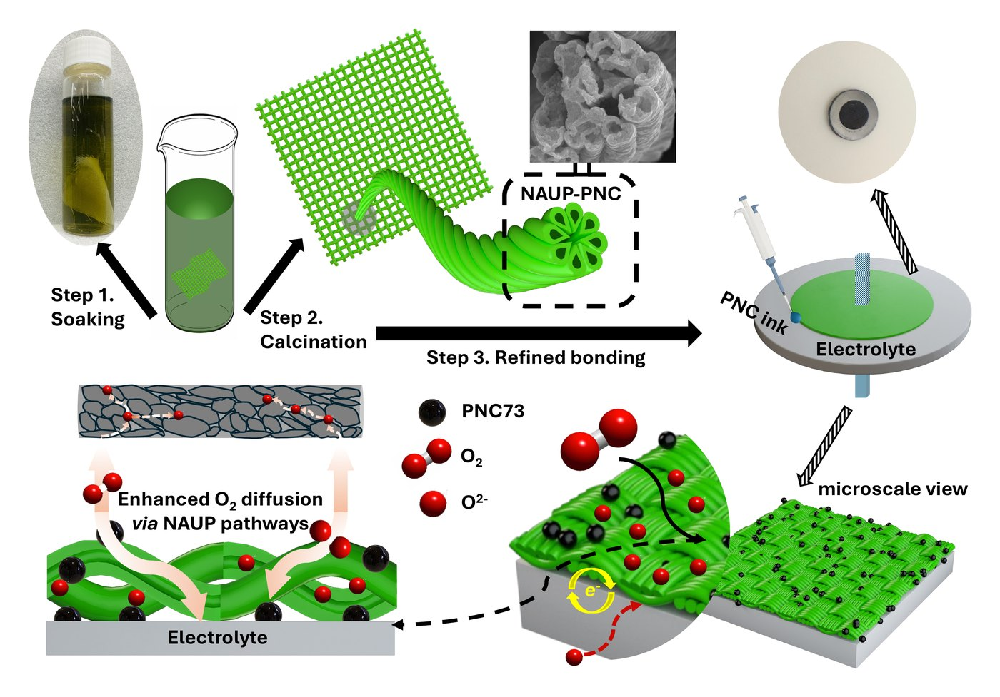
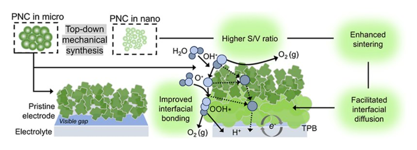
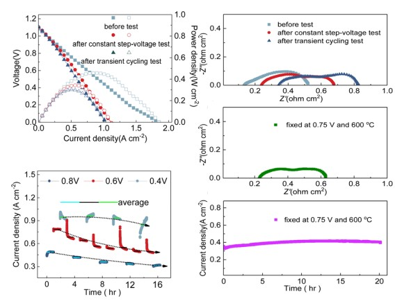

Adv. Energy Mater. 2026Interfacial Nanostructuring Enables Integrated, Low-Polarization Reversible Protonic Ceramic Cells ★ Featured in OU News ↗
Advanced Energy Materials, 16(20), e70850 (2026)
I am currently a postdoctoral researcher at the University of Oklahoma, working with Prof. Hanping Ding. My research develops advanced materials for clean hydrogen production, with a focus on reversible protonic ceramic cells for high-temperature water electrolysis and power generation. I engineer surfaces, defects and electrode–electrolyte interfaces to make these devices more efficient and durable, and I work closely with collaborators at the National Laboratory of the Rockies (NLR), Idaho National Laboratory (INL) and MIT. I received my Ph.D. in Mechanical Engineering from OU in 2026, and my M.S. in Materials Science and Engineering from Fuzhou University.
Surface and interfacial engineering — defect-engineered oxygen electrodes and tailored electrode–electrolyte interfaces for faster kinetics and long-term stability in reversible fuel-cell / electrolysis operation.
Interface-engineered PCEC / P-SOEC materials that boost electrolysis efficiency and durability for low-cost hydrogen production.
New proton-conducting electrolyte compositions with higher conductivity and stability for durable P-SOEC water splitting.
High-entropy alloy anode catalysts that enhance ammonia decomposition, electrochemical activity and operational stability.
Heterogeneous electrode–catalyst architectures (e.g., high-entropy alloy clusters) for CO₂-to-chemicals conversion.
Local hydration and alkalinity regulation at oxide catalyst–ionomer interfaces for durable pure-water AEM electrolyzers.
Engineering solid electrolytes and the lithium-metal | electrolyte interface to suppress dendrite growth, lower interfacial resistance and enable safe, high-energy-density all-solid-state batteries.

Adv. Energy Mater. 2026
Angew. Chem. 2026
J. Adv. Ceram. 2026
Adv. Mater. 2025
Nat. Commun. 2025
ACS Nano 2025
Mater. Adv. 2024I’m always happy to talk about hydrogen, protonic ceramics and collaborations. The best way to reach me is by email:
szheng@ou.eduSchool of Aerospace and Mechanical Engineering · University of Oklahoma · 865 Asp Ave, Norman, OK 73019